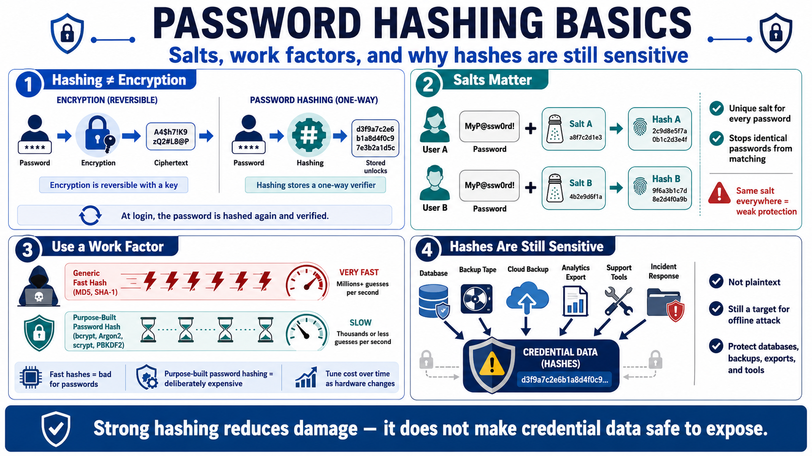

Password Hashing Fundamentals
Connecting to LMS... Progress: in progress

Narration
Password hashing is different from encryption. Encryption is reversible when the key is available. Password storage should not require recovering the original password. Instead, the system stores a one-way verifier. During login, the presented password is processed through the same password hashing scheme, and the result is compared to the stored verifier using the algorithm's expected verification routine.
Salts are a core part of password hashing. A salt is a unique value generated for each password and stored with the hash. It ensures that two users with the same password do not have the same stored verifier, and it frustrates precomputed lookup tables. Salts are not secret. Their value comes from uniqueness and correct use. A system that uses the same salt everywhere loses most of the benefit.
Work factors are another key concept. Password hashing should be deliberately expensive so that offline guessing is costly if hashes are stolen. Fast general-purpose hashes are not appropriate because attackers can test guesses very quickly. Purpose-built password hashing algorithms let teams tune cost over time as hardware changes. That tuning must be practical enough for normal authentication while expensive enough to slow bulk guessing.
Password hashes should still be treated as sensitive data. A hash is not the plaintext password, but it is a target for offline attack if stolen. Database access, backups, analytics exports, support tools, and incident response workflows should treat stored credential material carefully. Strong hashing reduces damage. It does not make the credential database safe to expose casually.